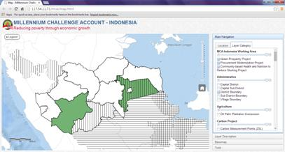
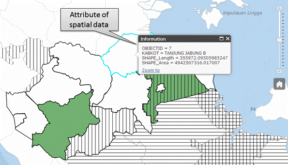
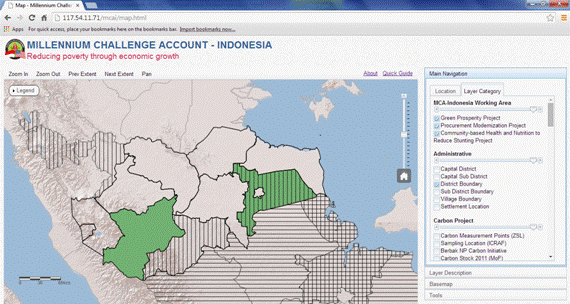
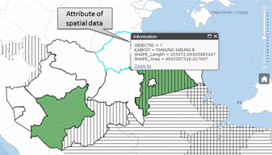
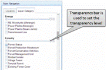
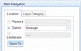
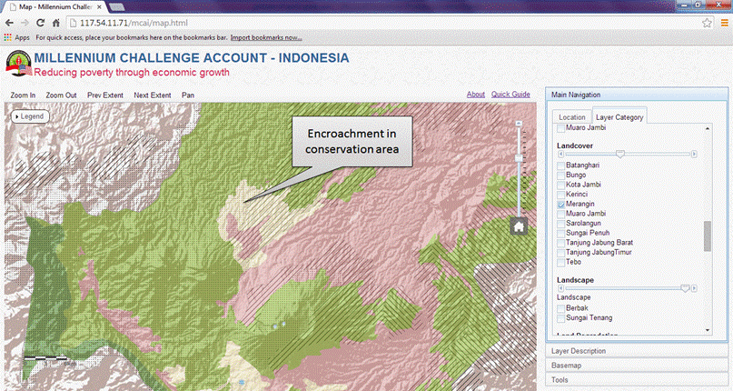
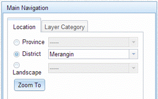
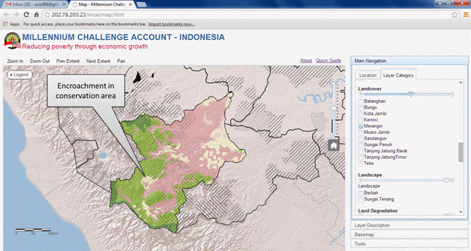

|
Quick Guide SummaryThis quick guide will walk you through MCA-I dashboard mapping application. It is meant for non GIS specialist looking to get started using the application. Dashboard Mapping ComponentsThere are two main components in the application, namely Navigation Window and Map Window (Fig. 1). Navigation window contains Main Navigation, Layer Description, Basemap and Tools. Main Navigation includes Layer Category and Location tabs. Layer Category contains a list of layers that are available in the application. Location tabs is used to navigate map window according to province, district, and landscape. Map window is used to display layers, which are active/checked in Layer Category tab.
Fig. 1. Dashboard mapping has 2 main components, i.e. navigation window and map window. Layer Description is located below the Main Navigation. It provides layer information such as short description of a layer and data source. Basemap is used to change the background of Map Window. Current default is using Ocean. Tools contain several facilities/tools such as tool to measure distance, export Map Window, and Searching an attribute. Exercise 1. Displaying working area of MCA-IndonesiaIn this exercise, users will be guided to display the working are of MCA-Indonesia project. There are three projects managed by MCA-Indonesia, i.e. Green Prosperity Project (GP), Procurement Modernization Project (PMP), and Community-based Health and Nutrition to Reduce Stunting Project (CHNRSP).
Map Window shows the starter district of GP project, which indicated by green color, while the working area of PMP and CHNRSP in district level represented by different type of hatching (see Fig. 2). The Legend will display the active layer. If you display many layers, you have to scroll down the legend menu to find the corresponding legend.
Fig. 2. Legend menu is used to display legend of the active layer. We can continue our exercise by zoom in to Jambi province
Map Window displays MCA-I project with geographic extend directing to Jambi Province. It also shows the projects located in the neighboring district of Jambi Province. District with two (or more) symbols indicate that the district has two (or more) projects, respectively. For example, Muaro Jambi has two MCA-I projects, i.e. GP and PMP.
Fig. 3. Location tab is used to zoom in into specific area (province, district, and landscape). The figure shows that MCA-I has two projects in Muaro Jambi (i.e. GP and PMP) and Banyuasin (i.e. PMP and CHNRSP). Supposed that you are not sure where the boundary of Jambi Province is. You can display it using the following step:
 Fig. 4. Administrative category provides layers related to administrative issue such as administrative (district, sub district, village) boundary and city/town/village location GIS has special function. Not only it helps you to know where the location is, it also allows you to know what information in a specific location. This information is called an attribute.
 Fig. 5. Attribute data provide information that is available in a spatial data. Very often people asking where the (spatial) data come from. We provide Layer Description, which is located below the Main Navigation to provide you information (short description and data source) on the layer that is active/being displayed.
 If you are still displaying District Boundary, Layer Description tells you that this data obtained from Biro Pusat Statistik (BPS)

Exercise 2. Assessing forest encroachment in MeranginIn this exercise, user will be guided to see a sign of forest encroachment using this application. We will use forest status and landcover layers. Both spatial data were obtained from Ministry of Forestry.
Forest status is classified into 5 classes. Originally, for Jambi province it has 9 classes. Cagar Alam (CA), Taman Nasional (TN), Taman Hutan Rakyat (Tahura), and Taman Wisata Alam (TWA) are grouped as Conservation Area to simplify the symbol. As you may have guess, this layer is obtained from Ministry of Forestry (MoF).
You may find that in some area the district boundary cannot be seen because it covered by forest status polygon. To solve this problem, we provide transparency level that can be used to display layers, which are overlaid.
 We are going to focus on Merangin district to assess the forest status with the existing landcover

Again, after displaying the landcover, forest status layer in Merangin is blocked by landcover layer.
Using the transparency bar you are able to check that protected forest (HL) is not necessarily forested area. In other words you may see sign of encroachment to protected forest in a specific area (see Fig. 6.)  Fig. 6. Sign of encroachment can be check visually by overlaying forest status and landcover. Exercise 3. Measuring distance between objectsThis exercise will walk through the use of a tool to measure the distance between renewable energy sources, i.e. Microhydro, to the closest transmission line (on grid). We assume that user already practicing exercise 1 and 2.
Your Map and Navigation Window should the same as Fig. 7. We would like to measure distance between the closest transmission lines to the Microhydro station. This distance can be important if the owner of Microhydro station would like to sell electricity, which they produce, to the state (PLN).  Fig. 7. This exercise will measure distance between the closest transmission line and Microhydro station using Distance tool
Your display should be the same as Fig 8. Several green flags show the path that you measured. The measured distance is about 37 km. This distance is not feasible for PLN to extend their transmission lines to the Microhydro station.  Fig 8. Distance tool measures distance between objects. It shows the measured path and distance.
|